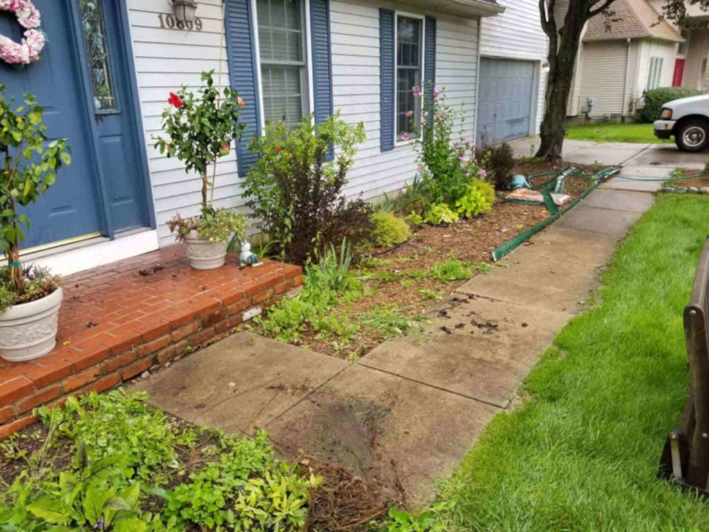
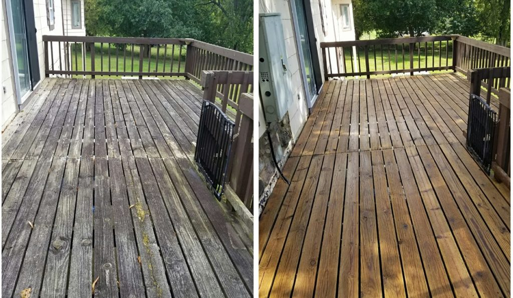

Never put off needed residential power washing in Power Wash Squad! Regular pressure washing removes thick dirt and grime as well as corrosive chemicals and pollution residues from your home’s exterior, while also washing away mold, mildew, and other bothersome debris.
Power Wash Squad washing protects a home from damage while ensuring it looks its best. While this work offers many benefits for homeowners, it’s easy to neglect needed power washing for your property, or to overlook signs that it’s time to call Power Wash Squad power washing company! Before you go another day without calling a power washing company near you, note some often-overlooked signs that it’s time for residential power washing on your property.
Discoloration? It’s Time for Power Wash Squad in Westchester!
If you notice discoloration outside your home, either along exterior walls or roofing shingles, it’s probably time for residential power washing of your home! That discoloration might be acid rain or pollution residues, soot from car engines or an outdoor grill, or just plain dirt and grime.
Water marks and streaks along exterior walls might also indicate that it’s time for gutter cleaning of Power Wash Squad. Once gutters are clogged, they allow rainwater to wash over their sides and down a home’s exterior walls. Not only does this result in unsightly streaks but it also increases the risk of water damage along those walls and the home’s foundation.
Power Wash Squad Removes Unpleasant Odors
An unpleasant, mildew or moldy smell outside your home might indicate it’s time for Power Wash Squad! As mold and mildew build up along outside walls, it’s easy to notice those odors when you’re on the deck or patio or even as they waft into the home through an open window.
Mold, mildew, and other such growth are not just irritating; these contaminants often bother a person’s sinuses and can even trigger allergic reactions! Residential power washing in Power Wash Squad removes those irritants and their bad odors, improving outdoor air quality and allowing for easier breathing!
Faded Wood Might Only Need Fence and Deck Pressure Washing
Over time, wood fences and decks tend to fade and appear washed out and ashen. While this is natural and to be expected, sometimes a gray tone along a wood fence or deck is only dirt, mud, dust, and other such debris! Fence and deck pressure washing on Westchester property removes those unsightly layers, giving new life to your outdoor features.
Fence and deck pressure washing also cleans away mold and mildew, restoring wood pieces and protecting them from damage. As mold and other contaminants spread, they work their way into wood cracks and crevices, making them larger and risking splitting and cracking. Before you decide it’s time to replace a deck or wood fence, consider residential pressure washing instead!
Remove Oil Spots With Power Wash Squad Driveway Pressure Washing
You don’t need to simply put up with oil spots and other discoloration and stains along a home’s driveway and concrete walkways. Driveway pressure washing on Power Wash Squad Westchester property removes oil, grease, and other debris, for a fresh, clean appearance outside your home.
Pressure washing surfactants and detergents also seep into concrete and patio paver pits and pores, dissolving grease, sand, silt, dust, and other such debris that a garden hose often misses. Specialty scrub brushes also make quick work of cleaning away that debris, for a fresh appearance to your property’s driveway, walkways, patio, pool deck, and other such spaces.
Cloudy Windows Might Only Need Pressure Washing Services
Over time, gritty debris, air pollution and acid rain residues, dried dust, and other materials tend to etch and scratch exterior window glass. Dirt and other debris then settle into those etches and scratches, making them worse and creating a cloudy, dirty look. Everyday cleaning or rinsing with a garden hose is often insufficient for removing that ground-in dirt.
Professional window cleaning of Power Wash Squad home washes away tough dirt and other debris, loosening dust, cobwebs, and silt. Homeowners are often surprised at how clean their windows look and how much more light comes into the home when they opt for professional window washing of Power Wash Squad!
Other Times You Might Need Residential Power Wash Squad
While it’s good to note signs that your home might need residential power washing, it’s also vital that you schedule this work as needed, even if you don’t notice indications that it’s time for pressure washing! Consider a few suggestions for scheduling residential power washing in Power Wash Squad and why this might be beneficial.
Your power washing contractor might also note when it’s good to schedule residential power washing for Power Wash Squad Westchester home. He or she might note your proximity to a nearby airport or stadium, which often means added soot along a home’s roof, or other factors that increase your need for regular power washing services.